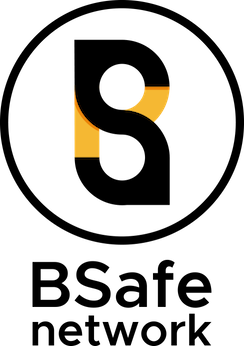

The goal of the BSafe.network is to construct a neutral, stable and sustainable research network for blockchain technology. This network is used for academic research, not only scientific research but also interdisciplinary social and economic research. BSafe.network aims to mimic the same degree of impact that BSD ( Berkeley Software Distribution) and the NSFNET (The National Science Foundation Network) had on the evolution of the Internet. The former provided robust, liberally licensed software that put into practice the many theoretical advances made by academia. The latter scaled expertise, experience and resources.
To realize a sustainable and decentralized blockchain network, large numbers of stable and neutral nodes are needed. The BSafe.network aims to help build this network by using the neutral role of a University. BSafe.network aims to have a criticial mass of nodes as a proportion of the current number of Bitcoin nodes.
BSafe.network aims to connect academia and real-life development, and to be a testbed and trust anchor for any research and real-life technology and application. For example, Bitcoin and other blockchain technology such as Ethereum can be linked to BSafe.network. The research results can be used for the future development of reliable technology, applications, technology and operational guidelines to which society can refer for the safe use of Bitcoin and blockchain technology.
Each university become a node of this network. That is, the group of the member university operates a blockchain network. Some member university can deploy software to conduct experiment or evaluation of research results.
Universities and individual researchers can join the BSafe.network. Each participant must eventually operate a node of the BSafe.network in their protocol of research interest. Because neutrality is critical value of the BSafe.network, private companies can join research over BSafe.network through university.
The white paper of BSafe.network is here